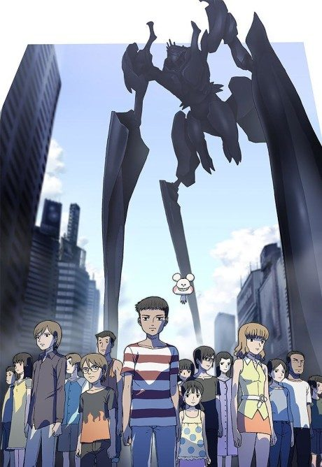
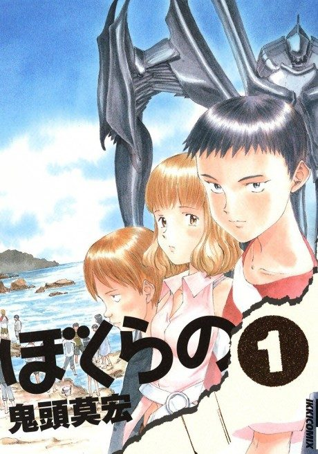

Bokurano
ぼくらの
The anime takes the story to Own end.
7.3AniList score
—Animeter, no votes yet
24episodes
Anime finished. Where does the manga pick up?
StatusOwn ending
The director deliberately changed the plot, so the anime diverges from the manga; read the manga from the start.